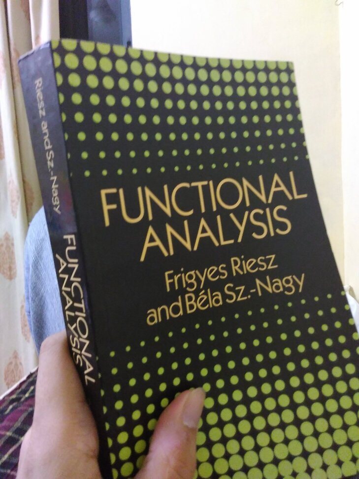
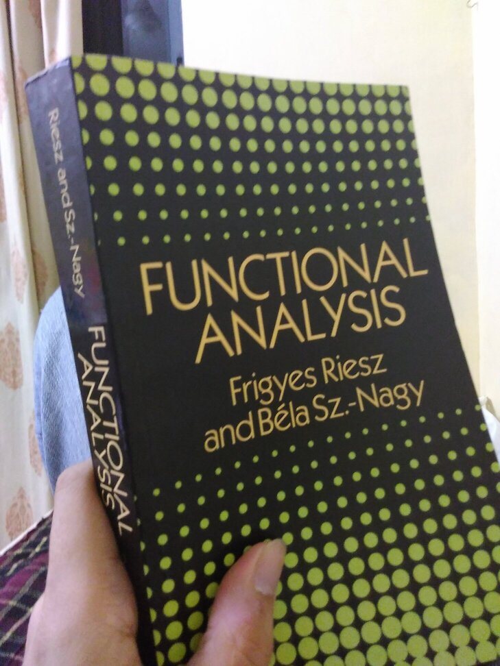
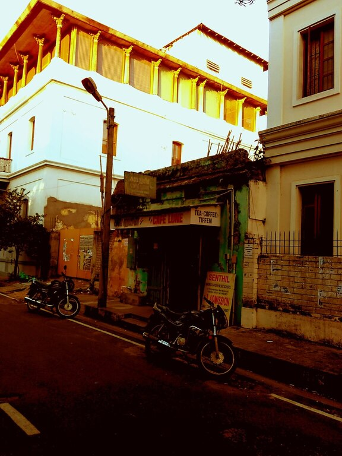
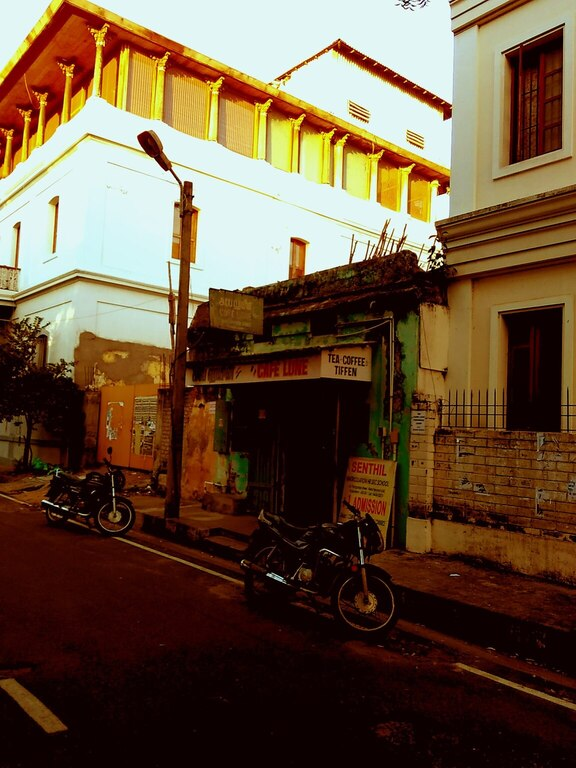

https://orcid.org/0000-0003-2878-6853
https://orcid.org/0000-0003-2878-6853My research interests are in Analysis of Partial Differential Equations.
Email:
News: With Profs. Neha Mishra and Prof. Sayantan Datta, I am coorganising a Symposium on Reflections on the Teaching of Reading and Writing in STEMM on the dates 17-19 January 2025. The Symposium will feature ten paper presentations by people working in Science Education, Writing Pedagogy, and Science Communication. A keynote lecture on "Effective Mathematical Reading" will be given by Professor Lara Alcock of Loughborough University, UK. To attend the symposium, we request you to register at this link by 15th January 2025.


 

 
